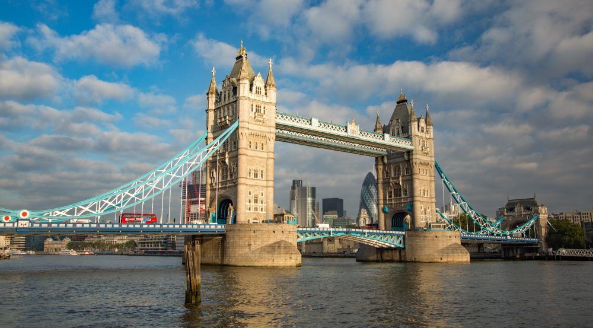

Londen (Engels: London) is de hoofdstad en grootste stad van zowel Engeland als het Verenigd Koninkrijk. In de regio Groot-Londen, waarvan de begrenzing tegenwoordig vaak gelijk wordt gesteld aan die van de stad Londen, wonen bijna 8,7 miljoen mensen. De hele regio van de metropool strekt zich evenwel nog ver uit buiten de grenzen van Groot-Londen. De grenzen hiervan zijn niet gemakkelijk aan te geven, het aantal inwoners ligt tussen de 12 en 14 miljoen.[1] Tussen 1831 en 1925 was Londen de grootste stad ter wereld.[2][3] De stad is, behalve de hoofdstad en de grootste stad van het Verenigd Koninkrijk, ook het politieke, economische en culturele centrum van dat land. Ook in Europa en de wereld vervult ze een belangrijke functie op diverse gebieden: Londen wordt als een van de vier traditionele alfa-wereldsteden beschouwd, samen met Parijs, Tokio en New York.[4] Vooral in de 18e en de 19e eeuw was Londen als hoofdstad van het Britse Rijk het absolute politieke en economische machtscentrum van de wereld. Londen telt vier plaatsen die op de Werelderfgoedlijst van de UNESCO staan: de Tower of London, de historische nederzetting van Greenwich, de Kew Gardens, en een gezamenlijke inschrijving bestaande uit het Palace of Westminster, Westminster Abbey en Saint Margaret's Church.
Wikipedia
